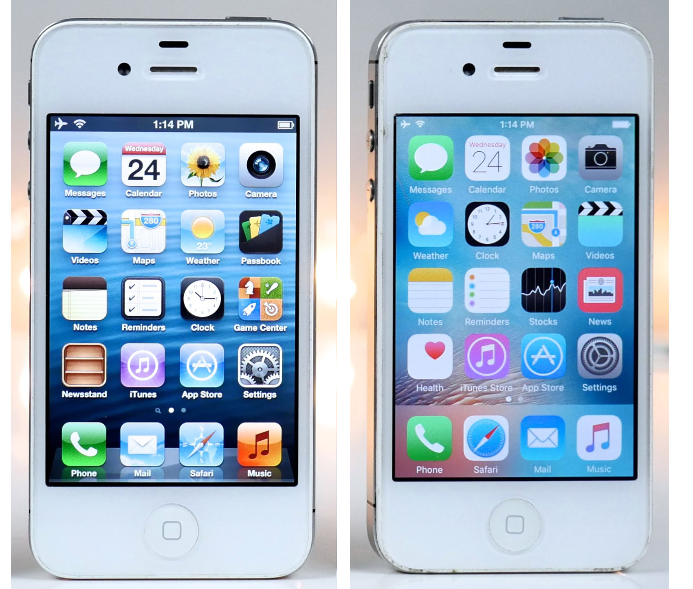
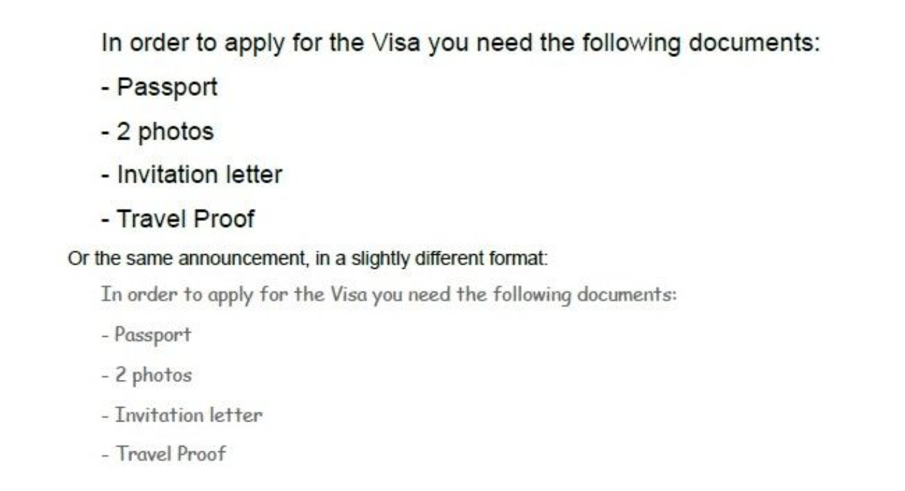
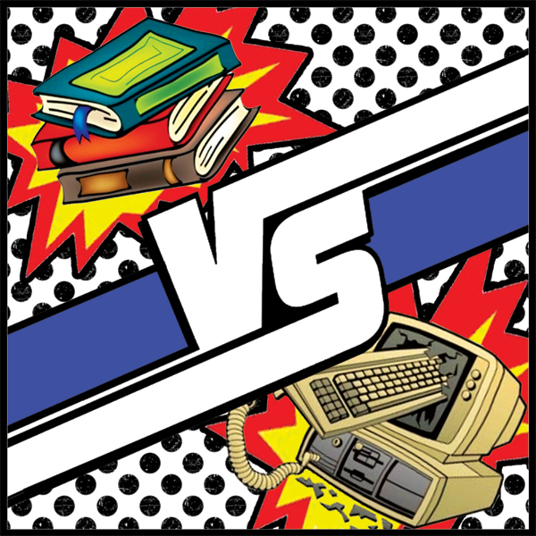
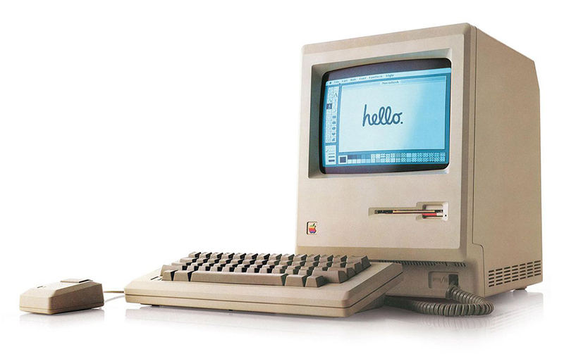
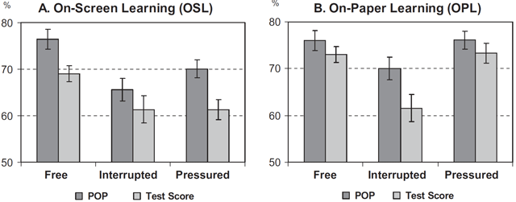
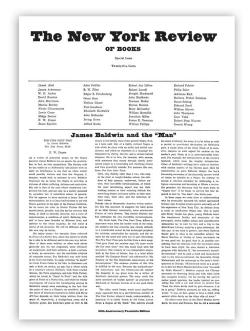
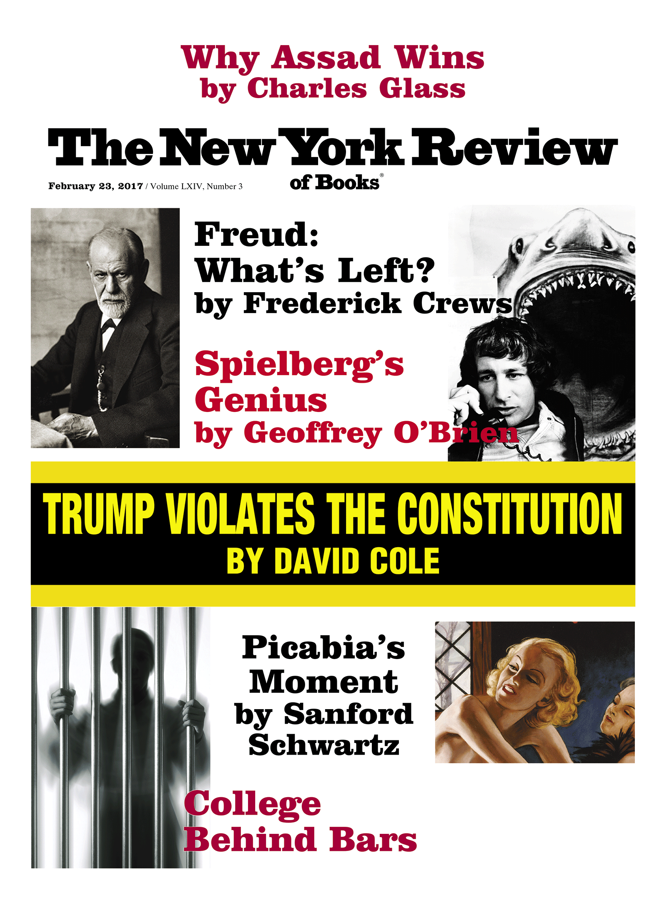

You hear the word "beautiful" all the time, these days, when web design's being discussed. Medium, the blogging platform created by the Twitter co-founder Ev Wiliams, was conceived to be "simple [and] beautiful". Likewise Svbtle, another "beautiful" stripped-down publishing system, was designed to "get out of the way". This is the aesthetic of Jony Ive's iOS7, with its flat icons and defiant lack of adornment; it's an aesthetic for a world that does its reading on smooth pieces of black glass with curved corners. It's the aesthetic that's rapidly coming to dominate the web – which is why I feel some nervousness in poking my head above the parapet to say: what if I don't want my reading experience to be this beautiful? 
Yes, yes, of course this is partly just the ranting of a decreasingly young web user, disgruntled by change. But it isn't only that. There's some evidence to suggest that when you make the reading experience too smooth and glossy and beautiful, you make it less engaging and satisfying, too. The key concept here, explored in depth by the psychologist Adam Alter, author of the book Drunk Tank Pink, is "cognitive disfluency". When information glides by too frictionlessly, we're liable to find it harder both to understand and to retain.
Online Behavior and Disfluency: The Ugliness Payoff
Why “Make It easy” Is Not Always Ideal
The “Nudge Revolution”, and the idea of applying behavioral insights to policy, came packed with a number-one mantra called “Make it easy”. Make it easy means that if we want people (i.e., citizens and consumers) to do something, we need to make it easy for them. If we want to get people to eat healthier foods, we need to put them in the cafeteria, and make them easier to find. If we want people to save more, we need to make saving the default option, automate the money transfer, and associate it with salary increases, to avoid loss aversion. If we want people to take vaccines, we should simplify the information and make it salient, to reduce the effort necessary to find the doctor and take the shot. But recent research in cognitive psychology is telling us: When it comes to learning and memory, making things easier is not always ideal, because fluency makes people less likely to comprehend and remember what they read. Thus, contrary to the idea that the easier the better, making material harder to read – what researchers in cognition called disfluency – might actually improve comprehension. What does this imply in terms of behavioral insights? A lot, as we will see, especially when the behavior we want to influence happens online.Visual Disfluency: The Ugliness Payoff
In the digital world, visual disfluency might be achieved by using unfamiliar typefaces in 60 percent grayscale. But, when it comes to dis-fluent designs, anything that makes visual perception less automatic – an unexpected layout, unusual colors, or a low figure-ground contrast – will originate more cognitive reflection. What can be the consequences of making material harder to read and people to reflect more about what they read? Let's imagine you want to travel to an African country. To know which documents you need to apply for a visa, you consult the embassy's website to check the information. There, you can read the following announcement. When is it more likely that you will remember which documents to bring to the Embassy? In the first example the information was presented in 16-point Arial pure black font. Not only the size of the letter was bigger, but the font was also more familiar and pure black (i.e., 100% in terms of grayscale), what we would call a visual fluent condition. In the second example, the information was not only presented in a lower size and unfamiliar font (12-point Comic Sans MS), but also in a 60 percent grayscale, what we would call a visual dis-fluent condition. The first answer that comes to mind (i.e., our common sense) is that using a 16-point Arial pure black font would increase the probability that you would bring the right documents to the Embassy and get your Visa without further delays. What researchers from Princeton University have shown is that, also when it comes to digital information, common sense is hiding good sense. Using a different example related with specific facts about alien species, the scientists showed that while subjects in the fluent condition correctly (i.e., 16-point Arial pure black font) answered 72.8 percent of the questions about the fictional creatures, those forced to read dis-fluent forms (e.g., 12-point Comic Sans MS in a 60 percent grayscale) correctly answered, on average, 96.5 percent of the questions. Thus, ugliness seems to have its advantages. Presenting information in a lower, less familiar, and less saturated color font, might slow down the reader's brain, allow the reader to engage with the material at a deeper level, and improve information comprehension and retention. In other words: It can significantly improve the percentage of applicants who show up with all the necessary documents at the embassy when applying for a visa, and because of that, to allow the embassy and the applicants to save time and resources.
Cognitive Disfluency: How to Make People Think
Dis-fluency can be of the visual, but also of the cognitive type. To make people notice important information they'd normally skim over, not only visual dis-fluency can help (e.g., highlighting the most important information in a difficult-to-read format, or in an unexpected layout) but also cognitive dis-fluency can be introduced. Increased depth of processing can be obtained if we require the reader to generate rather than passively consume information. Studies showed that requiring participants to generate letters in a word pair (e.g. ‘‘salt:p_pp_r’’) during memorization results in a higher retention rate of the word pairs than when the pairs were presented in their entirety (e.g. ‘‘salt: pepper’’). This principle can be extended, with significant return, to the way we design the contracts that determine the conditions of the transactions established in the online and offline world.Deliberate Dis-fluency and Digital Information Goals
The digital world, and to a greater extent the offline world, tend to think that high levels of fluency are always better: The easier and the faster, the better. However, the psychological literature suggests that sometimes hard can be better, especially if we want to make people to think more carefully about what is on the screen or even on paper. The main idea this piece of writing wants to communicate is that dis-fluency works as meta-cognitive alarm that makes people to process information more carefully. Thus, if we want people to slow down and process the information they read more carefully (e.g., healthwarnings on packs of cigarettes, mortgage information, warning signs) we need to present information with a “desirable level of difficulty.” In the digital world, this level of difficulty will depend on the goal of our digital information. If we want people to complete a transaction (e.g., complete an online check in) or make a quick purchase (e.g., buy a book in Amazon), then high levels of fluency are ideal, and we should make the process as easy as possible. If, on the contrary, we want people to reflect on, and remember what they read, then we should introduce dis-fluency, to slow the mind down, and allow the reader to engage with the information.Mindfulness in a Digital World
By avoiding dis-fluency in the digital world, we might also be preventing people from taking heed of the reduced speed limit and wipe out of the information which is presented to them online. This will significantly affect the quality of their decision-making, not allowing people to deliberately consider whether or not they should take out a particular service, buy a particular product, or apply to a particular insurance. Given the stunning progress of the last decade, one might expect digital reading to have leapfrogged paper reading. This originated a “digital reading gap” due to the fact that the current generation of LCD screens makes reading excessively easy. The brain doesn't need to work hard enough and we fail to process the words on the screen and to reflect on them. Thus, and contrary to the behavioral economics logic of making it easier for people to do the right thing, we might need to upgrade our behavioral insights toolkit to the digital world, and create a digital reading environment that resembles the ancient technology of paper, where a desirable level of reading difficulty originated enough cognitive reflection from the reader, and consequently, wiser decision-making. Apparently, when it comes to the digital world, it seems that “making it difficult” might also be the right way to help people do the right thing.
Adam Alter: 'Can't follow this column? Try changing the typeface'
How many animals of each kind did Moses take on the Ark?
In 1981, two psychologists documented a now famous illusion when they asked students a simple question: "how many animals of each kind did Moses take on the Ark?" Eighty-one per cent of the students answered with "two". It wasn't until later that 96 per cent of them correctly added that the animals actually joined Noah -- not Moses -- on the Ark.The Moses Illusion occurs because most of the time our minds glide along a mental highway, rarely slowing to consider the landscape more closely. Consequently, we tend to miss obvious flaws that elude us because we aren't paying attention. So what's the solution?
One answer is to challenge the over-applied mantra to "keep it simple", where "it" ranges from written communication to ideas shared aloud. As mantras go, this one usually makes good sense; it suggests that people have limited processing capacity and they're more likely to take a new idea on board when the idea is uncomplicated, accessible and memorable. Unfortunately, since simpler messages are less likely to challenge us, we're also more likely to overlook them.
Researchers have shown, then, that small bursts of mental complexity -- also known as cognitive disfluency -- encourage us to think more clearly. In one demonstration, psychologists found that students fell for the Moses Illusion 88 per cent of the time when the question was presented in an easy-to-read typeface, whereas only 53 per cent of the students in a second sample committed the error when the question was printed in a harder-to-read, grey Brush Script typeface.

Why should printing the question in fuzzy letters make a difference? It turns out that we assume the task is difficult and requires additional mental effort when the font is hard to read. We respond by recruiting additional mental resources to overcome that challenge, and our responses tend to be more accurate. In fact, this effect holds across a wide range of situations. For example, some of my colleagues and I have shown that people are less likely to rely on simplifying stereotypes when they're asked to furrow their brows. Like fuzzy fonts, a furrowed brow suggests that the task must be difficult, encouraging the person who adopts the expression to think more deeply before reaching a conclusion.
Replacing simplicity with complexity has other benefits. In one experiment, students in English, physics and chemistry classes at a public high school in Ohio achieved higher scores when their textbooks were printed in a disfluent font rather than a standard, clear one.
Disfluency also has the benefit of encouraging people to think more abstractly, which is useful when you are trying to recognise high-level associations between novel concepts. Abstraction is one of the key skills that enable children to learn as they develop.
Like the students who failed to see that Moses had replaced Noah on the Ark, we tend to blindly follow mantras such as "keep it simple" without questioning when complexity should replace simplicity. Communicating simply and clearly is better most of the time -- but strategic bursts of complexity encourage people to leave the mental highway for slower but steadier side roads.
Screen vs. paper: what is the difference for reading and learning?
Habit and attitude appeared to be important, and a digitally born textbook is by far the best alternative to a print textbook when it comes to studying. But even those who prefer to read on screens are originally native paper readers, and as long as the existing application interfaces cannot address the shortcomings of screens regarding spatial landmarks, we will keep returning to paper under certain circumstances.
We would like to see developers make more user-friendly e-readers, and authors and publishers learn to fully utilize of the potential of the e-book.
Introduction
It all started with a project at Uppsala University Library in Sweden called ‘Mobile Academics’, where we held seminars on how to use the library’s e-resources on a tablet computer and gave tips on different apps to use when studying. This project led to another seminar about the difference between reading on screen and on paper. To prepare for it, we read scientific articles and picked out a few of those as examples. We chose to focus on the articles that were more current, since studies made on screens from 1985 cannot be compared with the studies made on today's screens. It is not only the devices that have evolved, either: people have, too. Back in the 1980s not many people owned their own computer, whereas today a great many more people do. Is it dangerous to read from a screen?
In the early years of the railway, people were seriously concerned about how the speed (18 mph or 30 kmph) would affect the human body. The Lancet published a landmark series of articles about the dangers of railway travel to public health in 1862, and at the same time ‘railway spine’ became a common diagnosis.New inventions do make our lives easier in many ways, but they can also cause worries and troubles – both actual and imaginary. The trains did most certainly cause distress when they first came along and so does new technology today. These days, no one is diagnosed with ‘railway spine’, but we do get ‘iPad neck’, ‘computer vision syndrome’ and screen-related sleeplessness. Computer vision syndrome, a temporary condition with symptoms like headaches, fatigue and strained and dry eyes, can be prevented by closing your eyes or looking away from the screen every now and then. Reading on newer tablets with higher pixel densities spares the eyes, too. As with any sedentary work, it is always good to take regular breaks to prevent strain injuries like iPad neck.
It can be advisable to shut off your screen a couple of hours before bedtime, even when you are ‘only reading’, because the blue light of the screen may suppress the body’s production of melatonin, and this can disturb your sleep. Other ways to reduce blue light could be switching to ‘night mode’ in your reading app or installing a programme on your device that makes the colour of the display warmer at night.
Is it more difficult to read from a screen?
Kretzschmar et al. did a study in 2013 that compared reading effort on three different media: a paper page, an e-reader (e-ink) and a tablet computer. They studied eye movement, brain activity and reading speed. The participants also answered a few questions to determine reading comprehension. The older participants read both faster and with less effort on the tablet computer, due to the back lighting giving a better contrast, and because of this being better for older eyes.A study was undertaken in 2013 with tenth-graders in Norway, where the students were divided into two groups. One group read two texts (1,400–2,000 words) in print and the other group read the same texts as PDFs on a computer screen. In the reading comprehension test that was administered, the students who read on paper scored significantly better than those who read the texts digitally. It was easier for those who read on paper to remember what they had read. Mangen et al. say that this is because paper gives spatio-temporal markers while you read. Touching paper and turning pages aids the memory, making it easier to remember where you read something. Having to scroll on the computer screen makes remembering more difficult.
Do you learn less when reading e-texts?
Studies that control for factors like experience and attitude among respondents are uncommon. In a study from 20127, the authors Ackerman and Lauterman let 80 undergraduate engineering students read five texts either on paper or computer screens. After each text they completed a test, but before the test they had to make a prediction on how well they would perform in the test. They studied the texts under three different time conditions: for two texts they were allowed only seven minutes to read (pressured), for two texts they were allowed as much time as they needed (free) and for one text the participants thought they could use as much time as they wanted, but were interrupted after seven minutes (interrupted).The paper readers generally got better results, but not under the interrupted time condition, for which the results were similar for both groups (see Figure 1), which is very interesting because if technology-related factors were what caused the inferior results for the screen-reading group, the results should have been the same under all studying conditions. 
Small differences between prediction of performance and actual test scores means the students made an accurate calibration. A good calibration often leads to better results simply because you do not stop studying too soon. As shown in Figure 1 paper readers generally make a better calibration than the screen readers, who tend to be more overconfident.
The results of this study show that the problem with screen reading is more psychological than technological. But the study also argues that medium preferences matter, since those who studied on their preferred medium showed both less overconfidence and got better test scores.
How will we read in the future?
You need to get used to a new type of medium before you can use it to its full potential, and feel comfortable doing so. Today, 57% of all two-year-olds in Sweden are using the internet – most of them on a tablet computer.15 Those children are used to the technology, but that is not enough to master the art of digital reading. We think that the way children are taught to read and study in school is vital. If schools were able to integrate digital learning better, it would probably make it easier for those students to use e-books, and make them want to use them instead of print. Digital literacy will be an essential skill as more tests (such as Sweden’s nationwide school tests and exams) become available only in digital form – and if tests are only available in digital form, it might be more difficult for some just because they are not comfortable with the format.When you can easily find and download a suitable e-book, that also utilizes all the possibilities that the electronic medium offers and is not just a direct translation from print, that may be the day when all students will prefer e-books.
I hope the people at the New York Review of Books won't take it wrongly when I say I consider their magazine to be Exhibit A in this regard. Every time I see that crazy jumble of fonts on the cover, then turn to the dense columns of type inside, I get a small but palpable thrill. All that density and lack of white space says: dive in; there's lots to get absorbed in here.
  By contrast, there's an unbearable lightness to the slippery minimalism of Medium, and sometimes it gets in the way. Writing presented like that is wonderfully easy to consume, yet also wonderfully easy to forget. By the time I get to the end of even a short piece, the first paragraph has faded not just from the screen, but from my mind.
I don't expect the born-again minimalists of Silicon Valley to start re-cluttering their user interfaces. But it would be nice if they could remember that current aesthetic fashions are just current aesthetic fashions – not some ultimate Platonic ideal of how to communicate online. And if anyone wants to design a plug-in to make Medium look like the New York Review of Books, I can guarantee you one customer, at least.